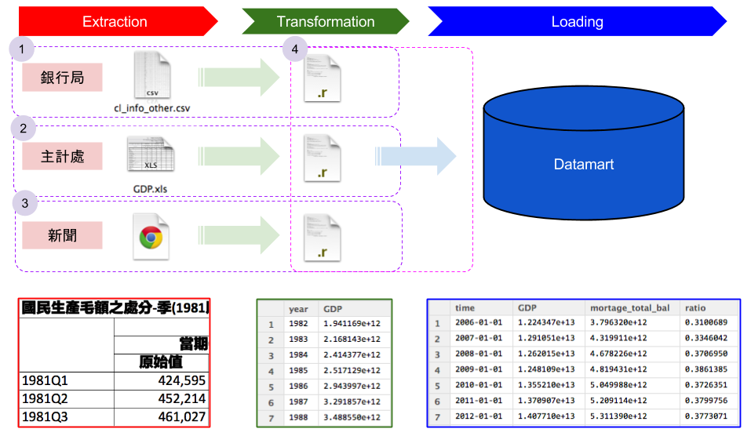
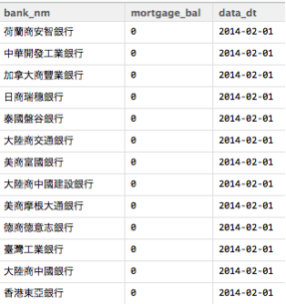
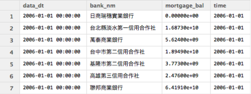
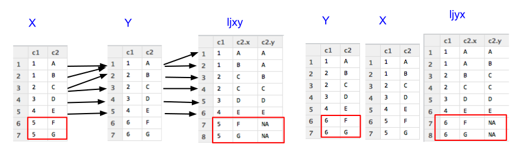
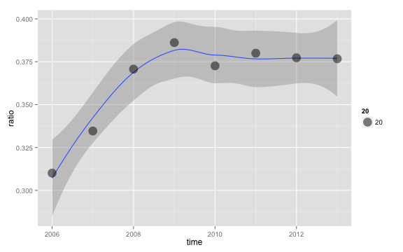

房價真的太高了嗎?

Cheng Yu Lin (aha)
房價真的太高了嗎?
大熊被抓了
台灣房市真的要崩盤了嗎？
在論述台灣房市之前，身為一個
資料科學家，第一步是了解問題
本次，我們的問題是
房價真的太高了嗎?
還記得這個新聞吧？ 就從這裡開始
從上面新聞所述，所以我們想要:
從上面新聞所述，所以我們想要:
你想知道什麼資料?從上面新聞所述，所以我們想要:
你想知道什麼資料?可能的來源?即便知道資料在哪，可是資料還是如同
一盤散沙
即便知道資料在哪，可是資料還是如同
一盤散沙
ETL

ETL
結構化資料 STEP1 房貸餘額1 , STEP2 GDP非結構化資料 STEP3新聞分析 等等 先安裝幾個建議的套件
dplyr 可用類似SQL語法操作data fromexts 處理時間格式好用的套件gdata 可以處理Excel 2007以上的文件install.packages("dplyr")
install.packages("xts")
install.packages("gdata")
好! 開始動手做吧!
請連線到
https://survey.banking.gov.tw/statis/stmain.jsp?sys=100&funid=r100
cl_info_other.csv至少要記得的 read.table
DF = read.table(file='檔案路徑',sep=",",stringsAsFactors=F,header=T)
Data Frame,做分割True, 會讓讀入的字串都用Factor形態儲存，那麼資料就會轉為整數儲存與額外的對照表False，表示第一行是不是表格標頭，作為輸出的dataframe欄位名的colnamesView(Cl_info)
str(Cl_info)

直接讀入是否覺得怪怪的?
library(dplyr)
Cl_info = read.table(file='./cl_info_other.csv',header=T,sep=",",stringsAsFactors=F)
Cl_info_part = mutate(Cl_info,data_dt = as.POSIXct(data_dt),
bank_code = as.factor(bank_code),etl_dt = as.POSIXct(etl_dt))
View(Cl_info)
Extraction與Transformation了！看見資料了!但是剛剛處理過程中的
mutate是什麼?
看見資料了!但是剛剛處理過程中的
mutate是什麼?
在
R中用來做資料清理與資料處理好用的套件dplyr其中之一的函式
select 函式，用來挑選欄位Cl_demo1 = select(資料表,欄位1,欄位2,欄位3)
第一個參數為輸入的data frame後續參數為選取的欄位名稱SQL的使用者select data_dt,bank_nm,mortgage_bal from Cl_info;

select 函式，用來挑選欄位Cl_demo1 = select(Cl_info,data_dt,bank_nm,mortgage_bal)
第一個參數為輸入的data frame後續參數為選取的欄位名稱SQL的使用者select data_dt,bank_nm,mortgage_bal from Cl_info;
filter 函式，用來保留要留下的資料列Cl_demo2 = filter(Cl_info,mortgage_bal>1000000)
第一個參數為輸入的data frame第二個參數為邏輯運算式，可用data frame裡的欄位，當結果為True時，該筆資料列保留SQL的使用者select * from Cl_info where mortgage>1000000;

特徵欄位(1/3)mutate 用來增加非彙總計算欄位Cl_demo3 = mutate(資料表,新欄位名 = 運算式)
第一個參數為輸入的 data frame第二參數為計算式，也可以用來當做轉換資料形態，變更欄位為名稱使用SQL的使用者select mortgage_bal/1000000 as mortage from Cl_info;

特徵欄位(2/3)mutate 用來增加非彙總計算欄位Cl_demo3 = mutate(Cl_info,mortage = mortgage_bal/1000000)
第一個參數為輸入的 data frame第二參數為計算式，也可以用來當做轉換資料形態，變更欄位為名稱使用SQL的使用者select mmortgage_bal/1000000 as mortage from Cl_info;
特徵欄位(3/3)Cl_info_part2 = mutate(Cl_info_part,time= as.POSIXct(data_dt))
排序資料(1/2)arrange 用來重新排序Cl_demo4 = arrange(資料表,欄位1,desc(欄位2)))
第一個參數為輸入的 data frame後續參數為排序用欄位，預設遞增，可以透過desc()變成遞減排序SQL的使用者select * from Cl_info order by mortage,data_dt desc ;

排序資料(2/2)arrange 用來重新排序Cl_demo4 = arrange(Cl_info,mortgage_bal,desc(data_dt))
第一個參數為輸入的 data frame後續參數為排序用欄位，預設遞增，可以透過desc()變成遞減排序SQL的使用者select * from Cl_info order by mortage,data_dt desc ;
讓我們來練習抓下一個資料
GDP
請連線到 http://ebas1.ebas.gov.tw/pxweb/Dialog/NI.asp
國民生產毛額之處分RStudio 開始處理資料練習讀入與創建一個
GDP的 data frame
答案
GDP = read.table(file='檔案位置',sep=",",stringsAsFactors=F,header=F)
答案
GDP = read.table(file='檔案位置',sep=",",stringsAsFactors=F,header=F)
輸入
View(GDP)觀察GDP會發現怎麼前後有很多列的資料是不要的

整理好這個data frome不相干的資料列百萬元變成元,去除年份與季
GDP_part = GDP[5:137,]
colnames(GDP_part) = c("time","GDP","GDP_yoy","GDP_2006","GDP_2006_yoy",
"GDP_minus","GDP_minus_yoy")

#去除中間不合理的,在數字欄位上與補上百萬
GDP_part2= mutate(GDP_part,GDP = as.numeric(gsub(",", "",GDP))*1000000)
gsub, 替換字元，將原先有問題的,去除as.numeric 將原來的文字形態改成數字
GDP_part3 = mutate(GDP_part2,year=as.numeric(substr(time,0,4)),
season=as.numeric(substr(time,6,6)))
GDP_part4 = select(GDP_part3,year,season,GDP)
substr, 取出特定位置的資料as.numeric, 將文字轉成數字
擁有了
GDP和房貸餘額，那接下來我們該怎麼處非結構化的新聞資料呢?
每個月的資料每年的資料年份將房貸餘額與GDP的表結合起來// 每個月的資料GDP 房貸 // 連結 兩張表的圖
彙總(1/2)group_by 用來將資料包裝成一組，做後續的彙總summarise則用來做後續的各類彙總操作Cl_info_part3 = group_by(Cl_info_part2,time) #先匯總
Cl_info_part4 = summarise(Cl_info_part3,
mortage_total_bal = sum(mortgage_bal, na.rm = TRUE))
第一個參數為輸入的 data frame第二個欄位之後都是用來group by/summarise 的欄位SQL的使用者select sum(mortgage_bal) as mortage_total_bal
from Cl_info group by time ;

group by 可加先下也可不下，不下的情況是直對接
全部資料做集匯總運算
彙總(2/2)GDP_part5 = summarise(group_by(GDP_part4,year),GDP=sum(GDP))
可以使用的函數如下所列
4 3order_by 使用; first(x,order_by(y))order_by 使用; last(x,order_by(y))order_by 使用; nth(x,10,order_by(y))//TODO 練習題目
1-1 水平結合多對多 水平結合多對多 水平結合前兩個很簡單,後面四個是如同SQL的join處理
left_join(x,y,by="c1")
對應
select x.*,y.*(扣除c1) from x left join y on x.c1=y.c1;
先建立資料集
x=data.frame(c1 = c(1,1,2,3,4,5,5),
c2 = c('A','B','C','D','E','F','G'))
y=data.frame(c1 = c(1,2,2,3,4,6,6),
c2 = c('A','B','C','D','E','F','G'))
先建立資料集
x=data.frame(c1 = c(1,1,2,3,4,5,5),
c2 = c('A','B','C','D','E','F','G'))
y=data.frame(c1 = c(1,2,2,3,4,6,6),
c2 = c('A','B','C','D','E','F','G'))
打入 View(x)與View(y)應該會看見

by 指出以何欄位作為對照鍵值透過先前創建的x與y，以及交集的鍵值c1
ljxy = left_join(x,y,by="c1") #以X為主
ljyx = left_join(y,x,by="c1") #以Y為主

inner_join 取出共有的鍵值inner_join(x,y,by="c1")
## c1 c2.x c2.y
## 1 1 A A
## 2 1 B A
## 3 2 C B
## 4 2 C C
## 5 3 D D
## 6 4 E E

補充)anti_join 取出非共有的鍵值anti_join(x,y,by="c1")
## c1 c2
## 1 5 F
## 2 5 G
anti_join(y,x,by="c1")
## c1 c2
## 1 6 F
## 2 6 G
補充)與left_join的差別在，只要對應不到的鍵值就不出現
semi_join 取出共有的鍵值,只留x 的欄位semi_join(x,y,by="c1")
## c1 c2
## 1 1 A
## 2 1 B
## 3 2 C
## 4 3 D
## 5 4 E
semi_join 取出共有的鍵值,只留y的欄位semi_join(y,x,by="c1")
## c1 c2
## 1 1 A
## 2 2 B
## 3 2 C
## 4 3 D
## 5 4 E

因為GDP_part5_所俱有的時間點較少，用這個當作主鍵是比較好的.
GDP_part7 = select(mutate(GDP_part6 ,
time = as.POSIXct(paste(year,'1','1',sep='-'))),time,GDP)
t1 = left_join(GDP_part6,Cl_info_part7,by="time")
t2 = filter(t1,is.na(mortage_total_bal)==FALSE)
看一下資料 View(t2)

see1 = filter(mutate(t2,ratio =mortage_total_bal/GDP),is.na(ratio)==FALSE)
畫圖library(ggplot2)
ggplot(see1, aes(time, ratio))+geom_smooth(method="loess") +
scale_size_area() +geom_point(aes(size = 20), alpha = 1/2)

利用解釋將圖想要表達的意思更清楚地傳達給觀眾
解釋投資?炒房?房價所得比，還可以說什麼呢?將所有的解釋與圖表包裝成一個故事，展現出來
報告
數量最少的銀行億新台幣呈現